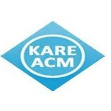

Professional Experience
Intern
Caze Labs Pvt. Ltd.
Banglore - Hybrid
2024 - Present
- Developed AI-driven solutions to address a range of industrial challenges.
- Applied large language models (LLMs) and prompt engineering, integrated with vector databases.
Additional Experience (Student Clubs)

President
ACM Student Chapter KARE
Kalasalingam University
2023 - Present
- Spearheaded major technical events including Disfrutar 2k24, CodeSprint 100, and 15+ events.
- Conducted workshops by the industry experts and challenges like Hour of Code to promote coding culture on campus.
- Mentored and trained new core team members to ensure leadership continuity.
- Played a strategic role in planning event roadmaps, handling logistics, and increasing student participation.
- Coordinated industry expert talks and webinars on Generative AI, Data Science, and Conversational AI.
Graphic Design Lead
Vishaka Cultural Club
Kalasalingam University
2025 - Present
- Designed posters, banners, and social media creatives for event promotions.
- Played a vital role in branding efforts that increased event visibility and student engagement.
Technical Lead
Score Craft KARE
Kalasalingam University
2024 - 2025
- Focused on delivering an engaging and seamless participant experience through technical innovation.
- Played an active role in planning, scheduling, and organizing the overall structure of Score Craft events.